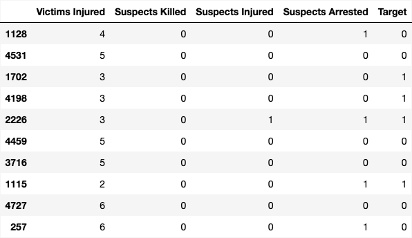
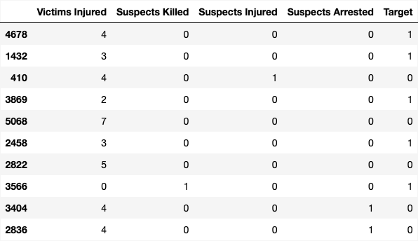
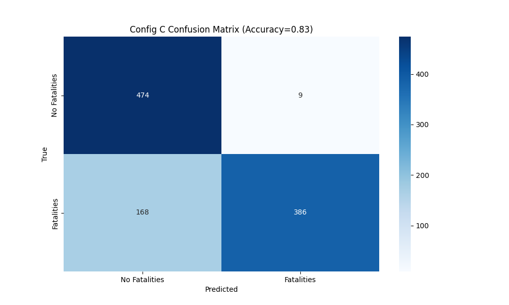
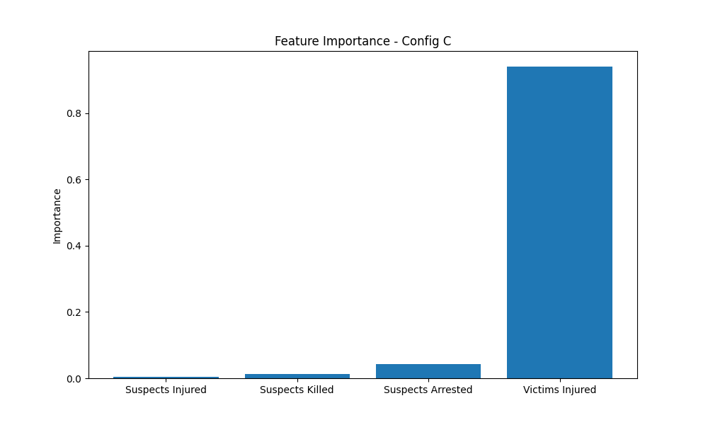
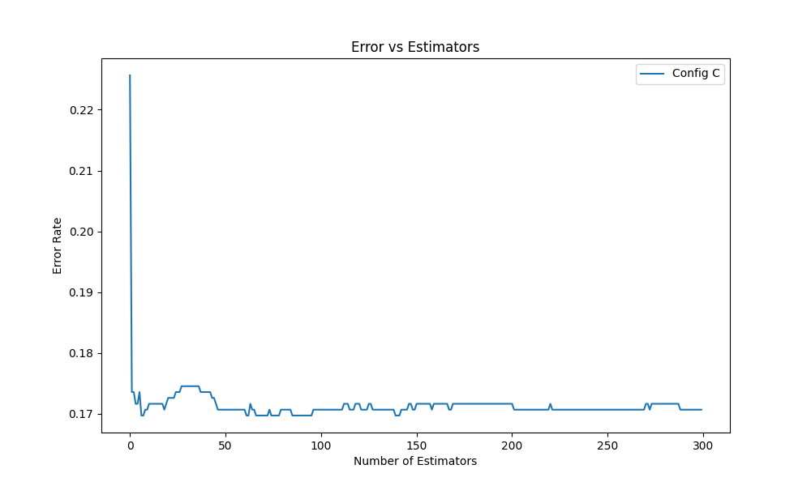
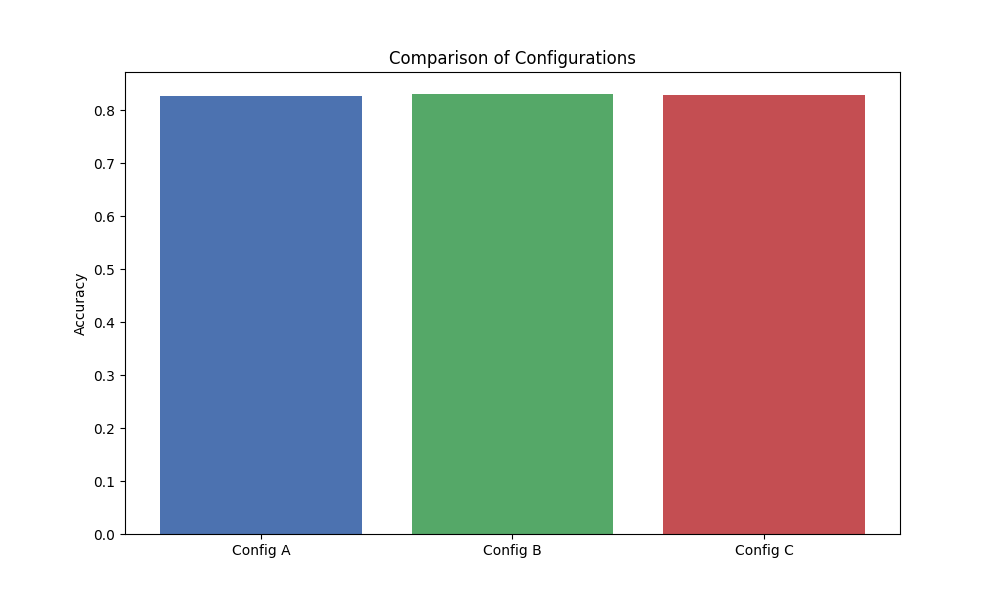

Mass Shootings

Training Data
Testing Data
Confusion Matrix
Feature Importance
Error vs Estimators
Comparison of Configurations
Conclusions
The boosting method proved highly effective for predicting fatal outcomes in school shootings, consistently achieving classification accuracies above 82% across all tested configurations.
The best-performing setup, Config B (learning_rate=0.05, n_estimators=200, max_depth=4), reached an accuracy of 0.830, narrowly outperforming the others.
Hyperparameter tuning had a measurable impact on model performance. Lower learning rates paired with deeper trees allowed the model to capture more complex patterns without overfitting, while higher learning rates led to faster convergence but slightly reduced accuracy. The error vs. estimators plot confirmed that most learning occurred early, with diminishing returns beyond 150 estimators.
Feature importance analysis revealed that “Victims Injured” was by far the most influential predictor, suggesting that injury count is a strong signal for whether fatalities occurred. This aligns with the project's broader goal of understanding patterns in gun violence data: boosting not only improved predictive accuracy but also highlighted which variables carry the most weight in fatality outcomes. These insights can inform future modeling, policy analysis, and data-driven prevention strategies.